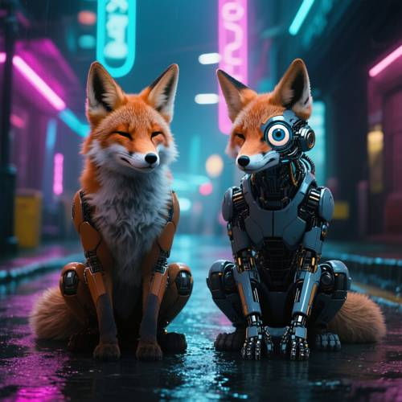
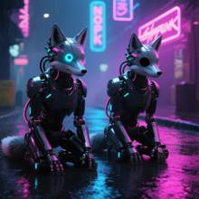

Style — In Cyberpunk style, two similar mechanical foxes squat side by side on
In Cyberpunk style, two similar mechanical foxes squat side by side on a wet street under neon lights, but one of them has no mechanical artificial eye.

Direct — one call, no iterationContinuum — Qwen3.8-27B + Qwen-Image
Judge — Direct
PASSStyle — The image successfully captures the Cyberpunk style. It depicts a scene on a wet, reflective street at night, illuminated by prominent pink and blue neon lights in the background. The subjects are cybernetically enhanced animals, which is a common trope in the genre.
FAILRelationship - Similarity — The image features two foxes that are both partially mechanical and are squatting side-by-side. However, their mechanical bodies are not similar. The fox on the left has orange armor plates on its limbs and shoulders, retaining a furry chest. The fox on the right has a more extensive, grey and black robotic endoskeleton for its entire body below the head. Their mechanical designs are distinctly different.
PASSGrammar - Negation — The prompt's negative constraint is fulfilled. The fox on the right clearly has a large, glowing blue mechanical artificial eye. The fox on the left has its eyes closed, but there are no visible mechanical components on its face or around its eyes, meaning it has no mechanical artificial eye.
Judge — Continuum
PASSStyle — The image exhibits a clear Cyberpunk style, featuring a dark, rain-slicked street, prominent neon signs in shades of pink and cyan, and robotic subjects. The overall atmosphere, with its high-tech elements and specific color palette, is characteristic of the genre.
PASSRelationship - Similarity — The image displays two mechanical foxes squatting next to each other. They are highly similar in their design, possessing identical robotic bodies, limbs, and tails. Their heads also share the same shape and metallic grey and white coloration.
PASSGrammar - Negation — The image successfully illustrates the negation. The fox on the left has a glowing blue mechanical eye. In contrast, the fox on the right has a dark, empty socket where its right eye should be, clearly showing it has no mechanical artificial eye.
What the agent did
Thinking
The user is asking for a cyberpunk-style image with two similar mechanical foxes crouching side by side on a wet street beneath neon lights, with one of them having no mechanical artificial eye (i.e., that one has either a natural eye, a hollow eye socket, or a missing eye, while the other has a mechanical/cybernetic eye). Let's think about this: "but one of them has no mechanical artificial eye" — meaning one fox has a mechanical artificial eye, and the other does not. The one without it should have either a normal organic eye, or a dark/hollow socket. The safer interpretation: one has a glowing cybernetic eye, and the other has either a natural-looking eye, or just an empty dark socket (a missing eye). "No mechanical artificial eye" most literally means the other one doesn't have a mechanical eye — that is, one has it and the other doesn't. Let's make it clearly distinguishable: one fox has a glowing red/cyan cybernetic eye, and the other has an empty dark socket (no eye at all) — that would be the most dramatic interpretation. Hmm, but "no mechanical artificial eye" could also mean it has a normal eye. The most visually distinguishable and safe approach is: one has a glowing mechanical eye, and the other has an empty dark socket. That clearly shows "no mechanical artificial eye." Alternatively, giving the other one a normal organic eye would also work. An empty socket is more dramatic in a cyberpunk context. Let's go with one fox having a glowing cyan/red cybernetic eye, and the other having a dark hollow socket (missing eye). Let's generate with qwen-image (per the benchmark policy, use qwen-image for both generation and editing). Size: probably 1024x1024 or cinematic 16:9? The prompt doesn't specify. For a street scene, landscape orientation would be nice. The harness controls the size… "size and seed are controlled by the harness" — meaning the harness sets the size? No, it means don't set a seed, and that the size/seed is controlled by the harness for comparison purposes. So I shouldn't set the width/height — just let it be the default (1024x1024). Actually, "don't set a seed. Size and seed are controlled by the harness" — so I should omit width/height/seed. Alright. Let's generate: "A cyberpunk scene: two similar mechanical foxes (mecha foxes) crouching side by side on a wet asphalt street at night, under bright neon signs, reflections on the wet ground. The left fox has a glowing cyan cybernetic artificial eye. The right fox has a dark empty eye socket with no eye — missing mechanical eye, a hollow dark socket. Chrome and matte black armor plating, visible servos and wires, rain, neon reflections in pink, blue, and purple, cinematic lighting, highly detailed, cyberpunk style." Then, inspect, verify the eye area with inspect_region, and edit if needed. Alright, let's get started.
Step 1 — `generate_image`
{
"model": "qwen-image",
"prompt": "Cyberpunk night scene, two similar mechanical fox robots squatting side by side on a rain-soaked wet street under bright neon signs. Both are sleek mecha foxes with chrome and matte black armor plating, visible joints, cables and glowing accents. The left fox has a glowing cyan mechanical artificial eye with a lens. The right fox is nearly identical but has NO eye in its left socket \u2014 a dark hollow empty socket, no lens, no glowing part, clearly missing its artificial eye. Wet asphalt with strong neon reflections in pink, blue and purple, light rain, atmospheric haze, cinematic lighting, ultra detailed, cyberpunk aesthetic."
}
Result img_0

Thinking
The image turned out pretty good. Let me check the details: - Two similar mechanical foxes crouched side by side ✓ - Cyberpunk style ✓ - Wet street ✓ (wet asphalt with neon reflections) - Under neon lights ✓ - One of them has no mechanical artificial eye: the left fox has a glowing cyan eye, and the right fox has a dark hollow socket ✓ Let me zoom in on both fox faces to confirm that the right fox's socket is truly empty and that both foxes are similar.
Model
The first generation looks very close to the brief. Let me verify the eye details at full resolution before marking it.
Confirmed via crop: - Left fox: glowing cyan mechanical artificial eye with lens ✓ - Right fox: dark, hollow empty eye socket, no lens, no glowing parts ✓ Both foxes look similar (same build, silver head, black armor, cables). Crouched side by side on a wet street with neon reflections, under neon signage. All elements of the prompt are present and accurate. This is a strong result. Mark as best and stop.
Model
Both eyes have been confirmed at full resolution: the left fox has a glowing cyan mechanical artificial eye with a lens, and the right fox has the same body, but its eye socket is empty and pitch black — no lens, no glow, no mechanical eye. All the elements of the prompt are present: two similar mecha-foxes crouching side by side, a cyberpunk-style neon street, wet asphalt with reflections.
Step 4 — `mark_best`
{
"image": "img_0",
"reason": "All requested elements verified: two similar mechanical foxes squatting side by side on a neon-lit wet street; left fox has a glowing cyan artificial eye, right fox has an empty dark socket with no mechanical eye."
}
Thinking
Complete. The marked image is the final version, and no edits have been made after the marking. I'll provide a concise summary.
Model
Done. The final image (img_0, marked as best) shows the two similar mechanical foxes squatting side by side on a rain-wet cyberpunk street under pink and blue neon signs: - **Left fox** — sleek silver/black mecha body with a glowing **cyan mechanical artificial eye**. - **Right fox** — nearly identical build and plating, but its eye socket is a **dark, empty hollow** with no lens or glow, clearly missing its artificial eye. Wet asphalt with strong neon reflections and light rain complete the cyberpunk atmosphere. Verified the eye detail via full-resolution crops — no further edits needed.